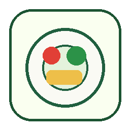

Plate signal, not pressure
BLE-style callbacks model calibration, grams removed, progress, and a calm disconnect state.
A Defold prototype that rewards looking, touching, and tasting before it ever asks a child to finish a plate.

BLE-style callbacks model calibration, grams removed, progress, and a calm disconnect state.
Quiet color, direct language, and slower transitions keep attention on one food step at a time.
Points and tokens arrive at exposure milestones—not only after a completed meal.
Texture, color, and exposure history become a compact Food IEP-style progress snapshot.
food-themed mini-games modeled in the token arcade
gradual meal steps rewarded before completion
Defold prototype with local persistence and modular systems